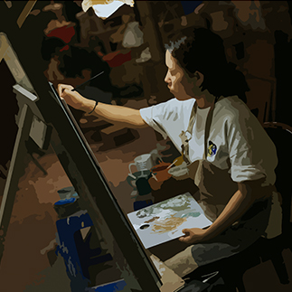

저희는 일상에서 흔히 볼 수 있는
다양한 소재들을 팝아트와 같이
커스텀을 하여, 팝아트와 더욱 친숙하고
가까운 생활을 주기위해 노력중입니다.
팝아트와 가까워질
당신을 기다리고 있습니다.
Core Values
저희의 핵심가치입니다.
항상 수용적인 태도로 고객과의 끈임없는
소통을 하여 원하는 결과를 도출하겠습니다.
창의적인 생각을 끊임없이 하여 매번 놀라운
작품을 만들어낼 것입니다.
도전적인 정신으로 안주하지 않고 새로운
작품활동에 임할 것입니다.
수용적
창의적
도전적

Work Process
저희의 작업방식입니다.
먼저, 의뢰가 들어온 고객과 원활한 소통으로
고객이 바라는 제품의 초안을 제작합니다.
다음으로, 초안을 바탕으로 제품 제작에
들어갑니다. 중간중간 의뢰인과의 소통은
끊임없이 이어지며, 고객이 만족할 수 있는
퀄리티를 위해 노력할 것입니다.
제품 제작이 끝나면 각 제품에 맞게 패키징을
하여 고객에게 전달될 것입니다.